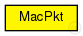

This documentation is released under the Creative Commons license
This documentation is released under the Creative Commons licenseA basic MAC (Media Access Control) packet format definition
subclass if you want to create your own MAC layer packet class
The basic MAC packet only provides source and destination address
Author: Daniel Willkomm
The following diagram shows usage relationships between types. Unresolved types are missing from the diagram. Click here to see the full picture.
| Name | Type | Description |
|---|---|---|
| Mac80211Pkt | packet |
Defines all fields of an 802.11 MAC frame |
| Name | Type | Description |
|---|---|---|
| destAddr | LAddress::L2Type |
destination mac address |
| srcAddr | LAddress::L2Type |
source mac address |
| sequenceId | long |
Sequence Number to detect duplicate messages |
This documentation is released under the Creative Commons license